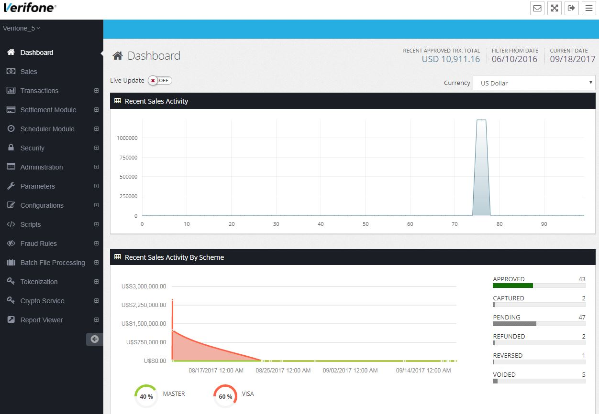

<div id="ajax-page" class="ajax-page-content">
    <div class="ajax-page-wrapper">
        <div class="ajax-page-nav">
            <div class="nav-item ajax-page-close-button">
                <a id="ajax-page-close-button" href="#"><i class="zmdi zmdi-close"></i></a>
            </div>
        </div>

        <div class="ajax-page-title">
            <h1>Verifone Merchant Portal</h1>
        </div>

        <div class="row">
            <div class="col-sm-7 col-md-7 portfolio-block">
                <div class="portfolio-page-image">
                    
                </div>
            </div>

            <div class="col-sm-5 col-md-5 portfolio-block">
                <!-- Project Description -->
                <div class="block-title">
                    <h3>Description</h3>
                </div>
                <ul class="project-general-info">
                    <li><p><i class="fa fa-globe"></i> <a href="https://www.verifone.com/en/us" target="_blank">www.verifone.com</a></p></li>
                    <li><p><i class="fa fa-calendar"></i> March, 2016</p></li>
                </ul>

                <p class="text-justify">The Verifone Merchant Portal is a comprehensive, web-based reporting tool for merchants using the Verifone (Weaver) Payment Gateway. The solution provides the tools needed to view and manage entire networks of merchant accounts and terminals, as well as generate a variety of transaction reports.</p>
                <!-- /Project Description -->

                <!-- Technology -->
                <div class="tags-block">
                    <div class="block-title">
                        <h3>Technology</h3>
                    </div>
                    <ul class="tags">
                        <li><a>HTML5</a></li>
                        <li><a>CSS3</a></li>
                        <li><a>Javascript/TypeScript</a></li>
                        <li><a>jQuery</a></li>
                        <li><a>Angular</a></li>
                        <li><a>Webpack/Grunt</a></li>                        
                        <li><a>Oracle</a></li>
                        <li><a>JPA/Hibernate</a></li>
                        <li><a>Java</a></li>
                        <li><a>Maven</a></li>
                        <li><a>Docker</a></li>
                        <li><a>Jenkins</a></li>
                    </ul>
                </div>
                <!-- /Technology -->

            </div>
        </div>
    </div>
</div>